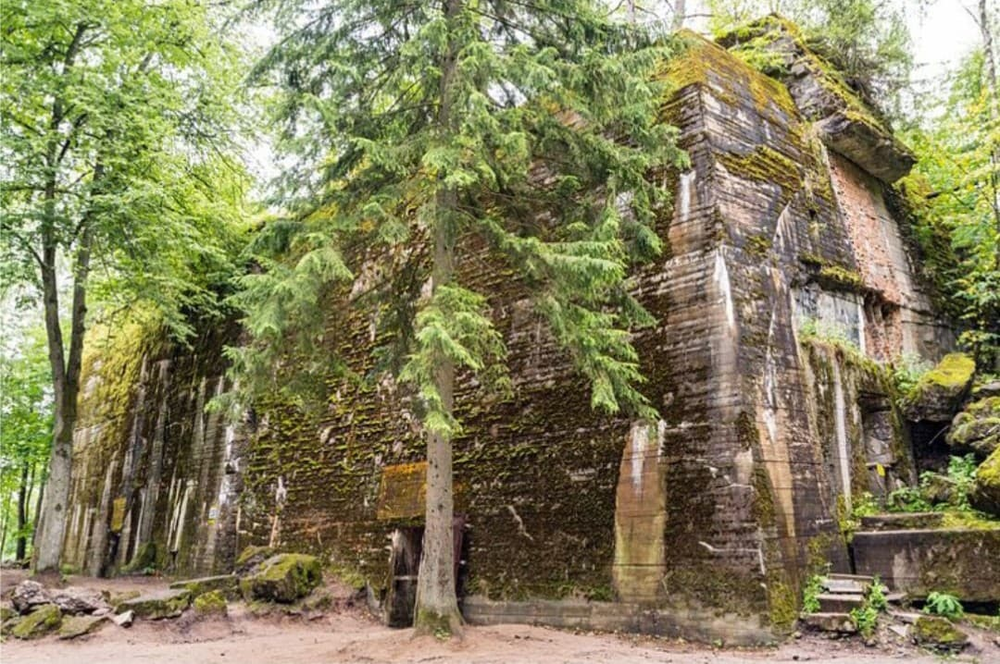
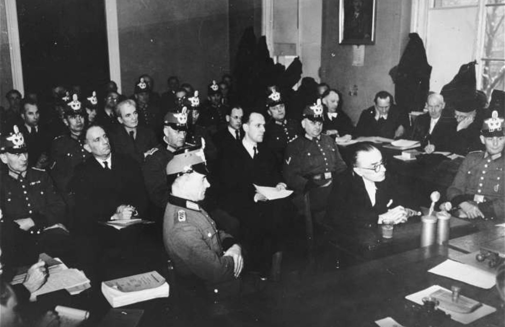
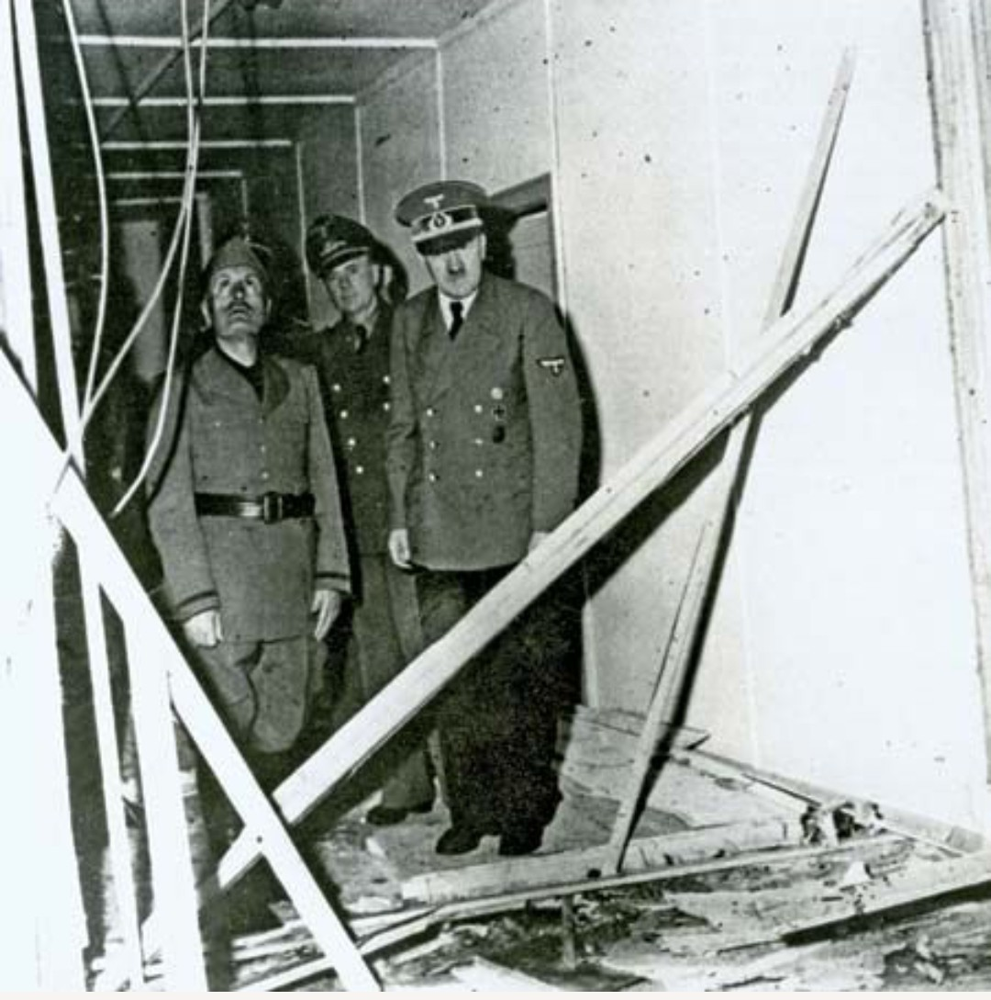
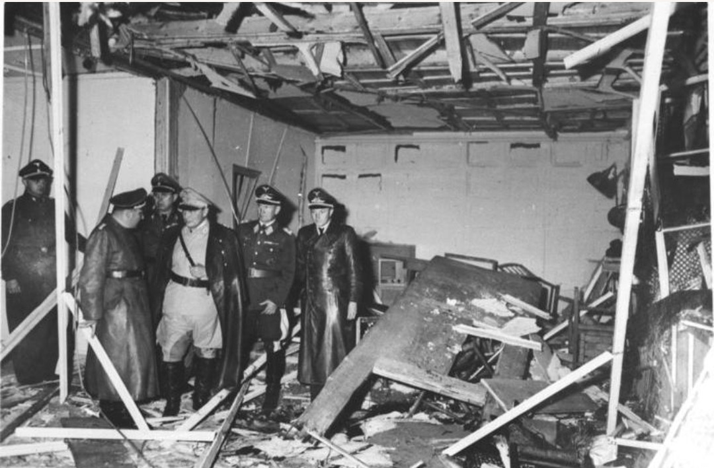
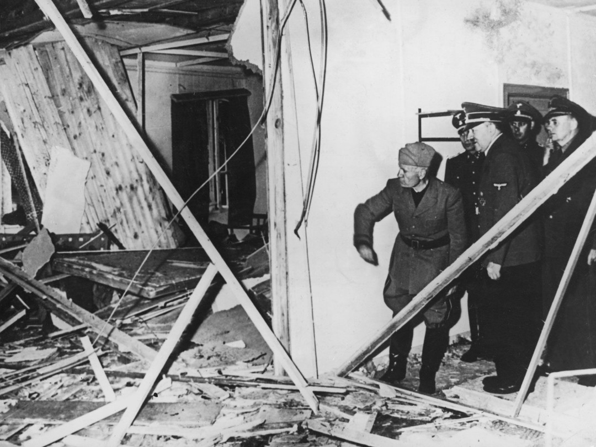
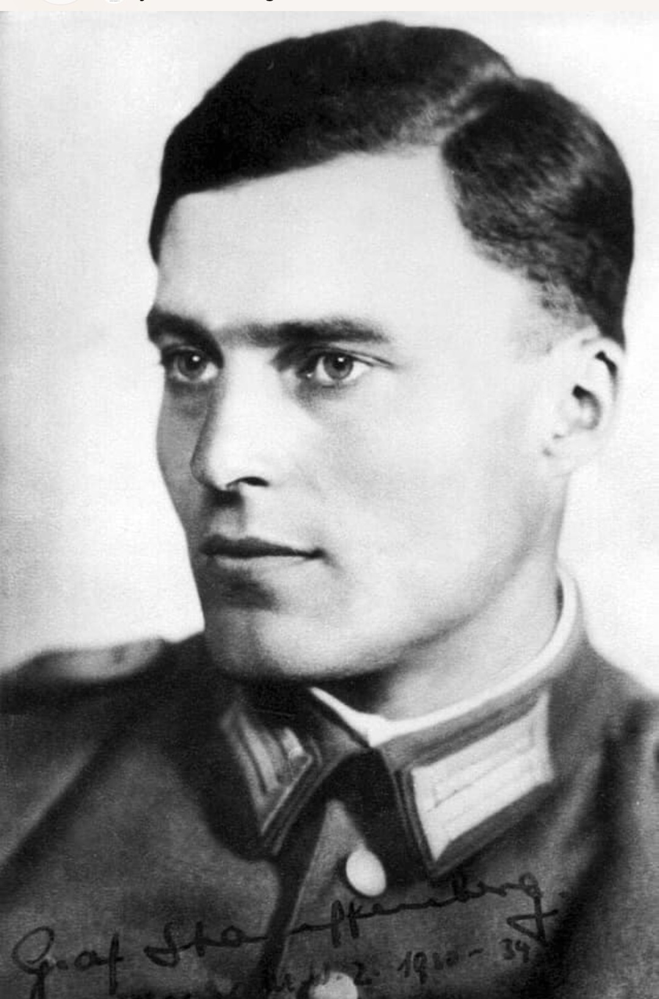

Wolfsschanze – Quartier général de Hitler
À l’été 1944, l’Allemagne est en recul sur tous les fronts. Une partie de l’armée allemande, horrifiée par les crimes du régime et convaincue que Hitler mène le pays à sa perte, prépare un complot visant à éliminer le dictateur et à reprendre le contrôle du Reich.

Procès des conspirateurs de l’opération Walkyrie
L’opération Walkyrie est conçue par des officiers de la Wehrmacht. Claus von Stauffenberg devient l’homme clé du complot : il doit déposer une bombe près de Hitler, puis déclencher un plan de prise de contrôle de Berlin.

Salle de conférence après l’explosion – 20 juillet 1944
Le 20 juillet 1944, à la Wolfsschanze, Stauffenberg active une bombe dans une mallette et la place près de Hitler. Quelques minutes après son départ, l’explosion ravage la salle de réunion.

Inspection des dégâts après l’attentat

Officiers examinant le lieu de l’explosion
La mallette est déplacée derrière un pied de table massif, ce qui absorbe une partie de l’explosion. Hitler est blessé, mais vivant. L’attentat échoue.

Claus von Stauffenberg – Jeune officier
Officier brillant et patriote, Stauffenberg devient le principal artisan de l’attentat. Il est arrêté et exécuté dans la nuit du 20 juillet 1944 au Bendlerblock.